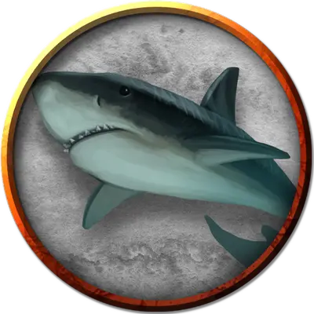

Акулотелое отродье
Sharkbody Abomination
Большая Аберрация, без мировоззрения

Класс Доспеха 12 (природный доспех)
Хиты 45 (6к10 + 12)
Скорость 20 футов, плавая 40 футов
| мод | спас | ||
|---|---|---|---|
| СИЛ | 18 | +4 | +4 |
| ЛОВ | 13 | +1 | +1 |
| ТЕЛ | 15 | +2 | +2 |
| мод | спас | ||
|---|---|---|---|
| ИНТ | 1 | −5 | −5 |
| МДР | 10 | +0 | +0 |
| ХАР | 4 | −3 | −3 |
Навыки Восприятие +2
Чувства слепое зрение 30 футов, пассивное Восприятие 12
Опасность 2 (450 опыта)
Бонус мастерства +2
Среда обитания Под водой
Особенности
Кровавое бешенство. Отродье совершает с преимуществом броски рукопашных атак по существам, у которых хиты ниже максимума.
Ограниченная амфибийность. Отродье может дышать и воздухом и под водой, но чтобы не задохнуться, ему нужно погружаться в воду хотя бы раз каждые 4 часа.
Подводное дыхание. Отродье может дышать только под водой.
Действия
Укус. Рукопашная атака оружием: +6 к попаданию, досягаемость 5 футов, одна цель. Попадание: 13 (2к8 + 4) колющего урона.
Описание
Шаман-сахуагин Селачай воспользовалась магией Ук'отоа, чтобы отомстить охотникам на акул из Пальма Флора. Несчастные охотники, которым не удалось спастись, превратились в монстров с грубой сероватой кожей, головой акулы и мускулистым гуманоидным телосложением. Эти существа обладают всем своим прежним интеллектом и индивидуальностью, но они реагируют на контроль Акульей телепатии своих хозяев-сахуагинов.
Истинный ужас акулотелых отродий заключается в том, что они могут быть жителями, которых персонажи встретили и оставили позади в первой части этого приключения. Если вы хотите задеть эмоции ваших игроков, когда они сражаются с этими монстрами, опишите, как акулотелые отродья телом напоминает конкретного НИП, которого персонажам не удалось спасти.
Проклятие, превратившее его в отродье, может быть отменено только заклинанием снятие проклятья [remove curse] или подобной магией.